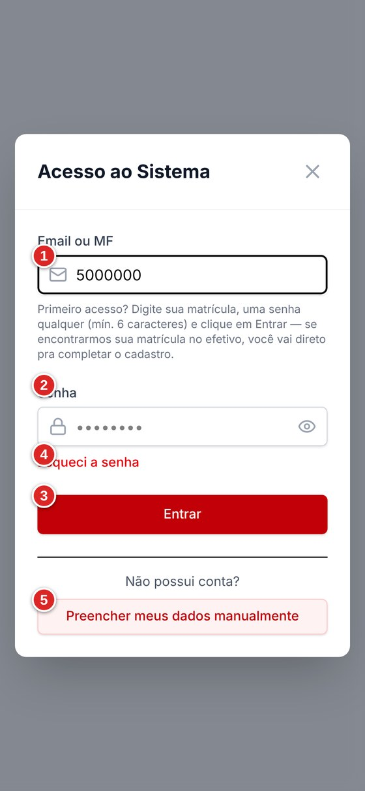
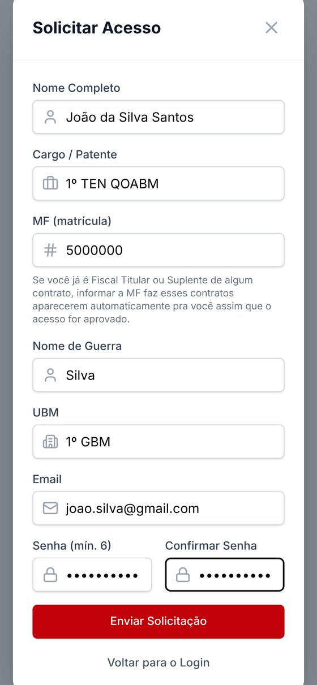
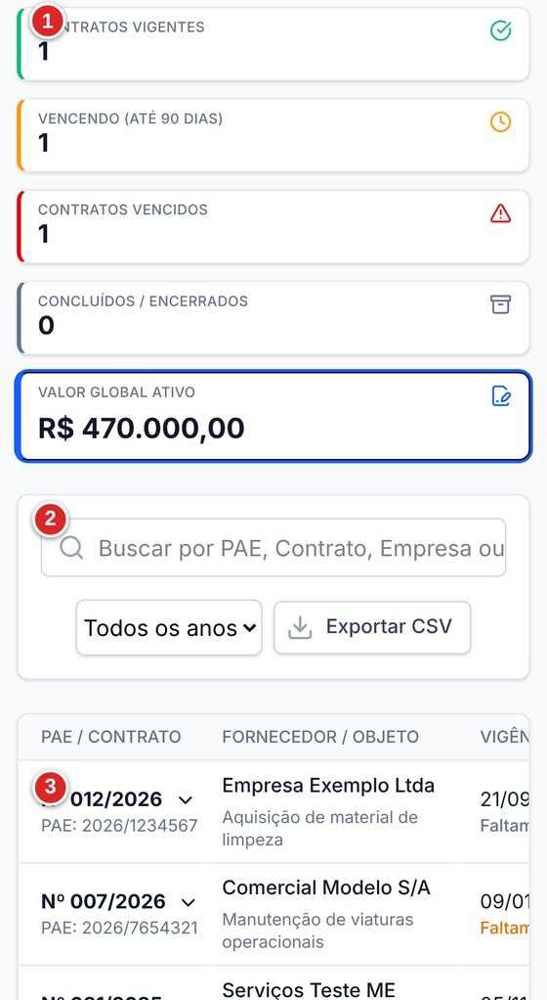
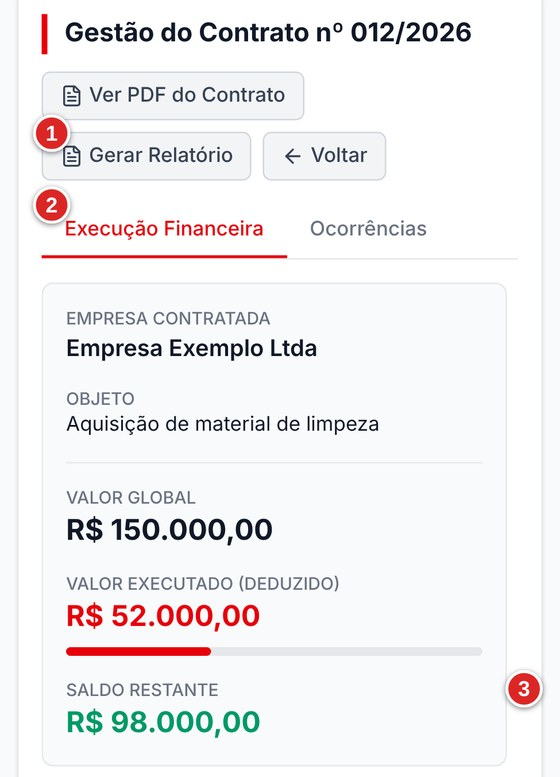
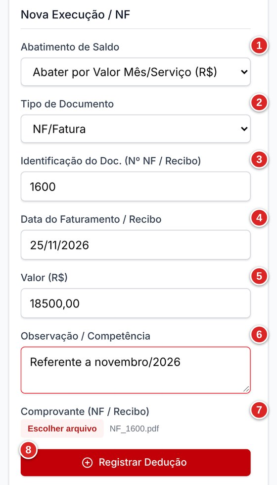
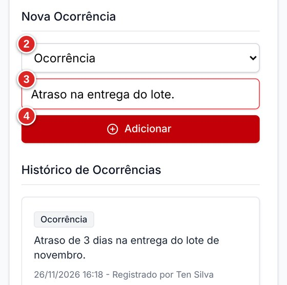

📋
Manual do Fiscal do Contrato
Passo a passo com telas do sistema, para ler no celular
CBMPA · DAL
Para que serve o módulo
- Ver só os seus contratos, com vigência e saldo;
- Registrar notas fiscais e recibos com o comprovante em PDF;
- Registrar ocorrências (atraso, problema, pedido de aditivo);
- Gerar o relatório do contrato.
📱 Funciona no celular e no computador, pelo navegador. Telas do manual com dados de exemplo.
Tenha em mãos: sua matrícula (MF) e o e-mail que consta no contrato (pode ser Gmail, Hotmail…).
📞 Dúvidas? E-mail: sipcdal@gmail.com
WhatsApp: (91) 98208-3739
1. Primeiro acesso

Tela “Acesso ao Sistema”
1
Digite a sua matrícula (MF).
2
Crie uma senha de pelo menos 6 caracteres.
4
Esqueci a senha: o sistema envia um e-mail para criar outra.
5
Matrícula não encontrada? Use Preencher meus dados manualmente (próxima página).
✅ Se a matrícula estiver no efetivo do CBMPA, abre “Completar Cadastro”: confira o nome, preencha nome de guerra, UBM, e-mail e senha, e toque em Enviar Solicitação.
⚠️ Use o mesmo e-mail e a mesma matrícula do contrato: é assim que o sistema reconhece os seus contratos.
2. Cadastro manual e aprovação

Tela “Solicitar Acesso”
Preencha todos os campos:
- Nome completo
- Cargo / patente
- MF (matrícula)
- Nome de guerra e UBM
- E-mail
- Senha (mín. 6) e confirmação
Toque em Enviar Solicitação.
⏳ Aparece “Solicitação enviada com sucesso! Aguarde a aprovação”. A DAL/administrador aprova o seu acesso. Depois da aprovação, é só entrar com e-mail ou matrícula e a senha.
⚠️ Só quem tem cadastro aprovado recebe os e-mails do sistema (por exemplo, o aviso de que foi designado fiscal).
3. Seus contratos

Menu → Fiscal do Contrato
1
Quadros: toque para filtrar a lista.
2
Busca por PAE, contrato, empresa ou objeto.
3
Toque no número do contrato para abrir.
📱 A tabela é larga: deslize para o lado para ver vigência e situação.
| Quadro | Significa |
|---|
| Vigentes | Mais de 90 dias de prazo |
| Vencendo | ⚠️ Até 90 dias para vencer |
| Vencidos | Prazo acabou |
| Concluídos | Contratos encerrados |
Vigente Vencendo Vencido
Não vê nenhum contrato? Veja “Problemas comuns”, no fim do manual.
4. Abrir e gerenciar o contrato
1
Visualizar Contrato: abre o PDF do contrato, dentro do sistema.
2
Gerenciar Execução / Notificações: entra na gestão do contrato.

Gestão do contrato
1
Gerar Relatório do contrato (dá para imprimir ou salvar em PDF).
2
Abas: Execução Financeira e Ocorrências.
3
Saldo restante: o que ainda pode ser usado.
Também aparecem os botões Ver Nota de Empenho e Voltar.
5. Registrar uma nota fiscal

Aba Execução Financeira
1
Abatimento: por valor (serviços) ou por quantidade (bens).
2
Tipo: NF/Fatura, Recibo de Pagamento ou Recebimento da NE.
5
Valor (R$) ou quantidade.
6
Observação: a competência, ex. “Referente a novembro/2026”.
7
Comprovante: anexe a NF em PDF.
8
Confira e toque em Registrar Dedução.
📝 Recibo e Recebimento da NE só confirmam: não abatem saldo (botão Registrar). A NF vai para a Linha do Tempo e o saldo se atualiza; acima do saldo, aparece “Acima do saldo”.
6. Ocorrências e pagamento

Aba Ocorrências
2
Escolha o tipo: Ocorrência, Solicitação de Aditivo ou de Esclarecimento.
3
Descreva: atraso na entrega, item em desconformidade…
O registro fica no histórico, com data e seu nome.
Situação do pagamento
Cada nota mostra como está o pagamento no Financeiro:
Aguardando pagamento Em andamento no Financeiro Pago
O valor da nota só sai do saldo depois do pagamento.
7. Problemas comuns
Não vejo meu contrato
O sistema mostra contratos em que a sua matrícula, e-mail ou nome batem com o fiscal do contrato. Confira os dados do seu cadastro. Se não aparecer, fale com a Gestão de Contratos.
Não consigo entrar
Confira e-mail/matrícula e senha, ou use Esqueci a senha. Se acabou de se cadastrar, aguarde a aprovação.
Não recebo e-mails do sistema
Só recebe quem tem cadastro aprovado, com o mesmo e-mail do contrato. Olhe o spam.
O anexo não sobe
Use PDF de até 50 MB. Se aparecer “Sessão expirada”, entre de novo.
Registrei errado
Não refaça por conta própria. Avise a Gestão de Contratos.
📞 Suporte: sipcdal@gmail.com
WhatsApp: (91) 98208-3739
Sistema de Controle de Processos — CBMPA. Telas com dados de exemplo; podem receber melhorias.